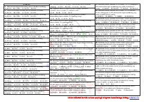

M4Kimyoviy birikmalarda elementlarning massa ulushini hisoblash bo'yicha masalalar to'plami.
Ushbu qo'llanma kimyoviy birikmalarda elementlarning massa ulushini hisoblashga oid nazariy va amaliy masalalarni o'z ichiga oladi. Unda turli xil moddalar, jumladan kislotalar, tuzlar va kristallgidratlar tarkibini aniqlash bo'yicha test savollari keltirilgan.